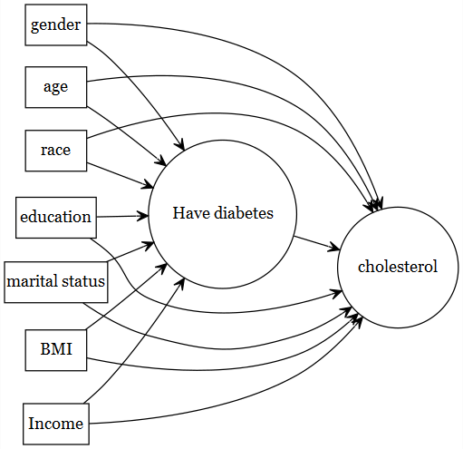

Chapter 4 Propensity score
4.1 Motivating problem
| \(Y\) : Outcome | Cholesterol levels (high vs. low) |
| \(A\) : Exposure | Diabetes |
| \(L\) : Known Confounders | gender, age, race, education, married, BMI |
Search literature for the confounder variables, and look for those variables in the data source (NHANES 2017-2018).
- Data recourses:
- All of the data files used in this workshop are available in the GitHub repo.
load(file="data/NHANES17.RData")
require(dplyr)
analytic <- dplyr::select(analytic,
cholesterol, # outcome
gender, age, race, education,
married, bmi, # confounders
diabetes) # exposure
analytic$cholesterol <- ifelse(analytic$cholesterol > 240, 1, 0)
analytic$diabetes <- ifelse(analytic$diabetes == "Yes", 1, 0)
require(summarytools)
dfSummary(analytic)## Data Frame Summary
## analytic
## Dimensions: 1562 x 8
## Duplicates: 2
##
## -----------------------------------------------------------------------------------------------------------------------------------------------------------------
## No Variable Label Stats / Values Freqs (% of Valid) Graph Valid Missing
## ---- --------------------- --------------------------- -------------------------- --------------------- ------------------------------------ ---------- ---------
## 1 cholesterol Min : 0 0 : 1391 (89.1%) IIIIIIIIIIIIIIIII 1562 0
## [numeric] Mean : 0.1 1 : 171 (10.9%) II (100.0%) (0.0%)
## Max : 1
##
## 2 gender 1. Female 603 (38.6%) IIIIIII 1562 0
## [character] 2. Male 959 (61.4%) IIIIIIIIIIII (100.0%) (0.0%)
##
## 3 age Age in years at screening Mean (sd) : 53.2 (17.2) 61 distinct values : : : 1562 0
## [labelled, integer] min < med < max: . : . . : : : : : (100.0%) (0.0%)
## 20 < 55 < 80 : : : : : : : : : :
## IQR (CV) : 29 (0.3) : : : : : : : : : :
## : : : : : : : : : :
##
## 4 race 1. Black 324 (20.7%) IIII 1562 0
## [character] 2. Hispanic 284 (18.2%) III (100.0%) (0.0%)
## 3. Other 228 (14.6%) II
## 4. White 726 (46.5%) IIIIIIIII
##
## 5 education 1. College 806 (51.6%) IIIIIIIIII 1562 0
## [character] 2. High.School 658 (42.1%) IIIIIIII (100.0%) (0.0%)
## 3. School 98 ( 6.3%) I
##
## 6 married 1. Married 921 (59.0%) IIIIIIIIIII 1562 0
## [character] 2. Never.married 228 (14.6%) II (100.0%) (0.0%)
## 3. Previously.married 413 (26.4%) IIIII
##
## 7 bmi Body Mass Index (kg/m2) Mean (sd) : 30 (7.3) 314 distinct values : 1562 0
## [labelled, numeric] min < med < max: : . (100.0%) (0.0%)
## 14.8 < 28.9 < 64.2 : : :
## IQR (CV) : 8.8 (0.2) : : : :
## . : : : : : .
##
## 8 diabetes Min : 0 0 : 1232 (78.9%) IIIIIIIIIIIIIII 1562 0
## [numeric] Mean : 0.2 1 : 330 (21.1%) IIII (100.0%) (0.0%)
## Max : 1
## -----------------------------------------------------------------------------------------------------------------------------------------------------------------4.2 Defining Propensity score
- Conditional Probability of getting treatment, given the observed covariates
Prob(treatment: \(A = 1\) | baseline or pre-treatment covariates: \(L\))
Prob(\(A = 1\): Has diabetes | \(L\): gender, age, race, education, married, bmi)
- PS = \(Prob(A=1|L)\)
Condensing multiple variables (in L) into one summary variable (PS).
- Essentially a dimension reduction exercise!
4.2.1 Theoretical result
Rosenbaum and Rubin (1983) showed:
- For potential outcomes \(Y(1), Y(0)\), if you have sufficient observed covariate list \(L\) to reduce confounding (`strong ignoribility’):
- i.e., if \((Y(1), Y(0)) \perp A | L\)
- Note that is this NOT \(Y \perp A | L\)
- then
- \((Y(1), Y(0)) \perp A | PS\) and
- \(A \perp L | PS\)
4.2.2 Assumptions
| Conditional Exchangeability | \(Y(1), Y(0) \perp A | L\) | Treatment assignment is independent of the potential outcome, given L |
| Positivity | \(0 < P(A=1 | L) < 1\) | Subjects are eligible to receive both treatment, given L |
| Consistency | \(Y = Y(a) \forall A=a\) | No multiple version of the treatment |
4.2.3 Ways to use PS
Many ways to use propensity scores (PS) in the analysis
- PS matching [our focus today]
- PS weighting
- PS stratification
- PS used as a covariate
4.3 PS Matching Steps
Propensity score matching has 4 steps (Austin 2011a)
| Step 1 | exposure modelling: \(PS = Prob(A=1|L)\) |
| Step 2 | Match by \(PS\) |
| Step 3 | Assess balance and overlap (\(PS\) and \(L\)) |
| Step 4 | outcome modelling: \(Prob(Y=1|A=1)\) |